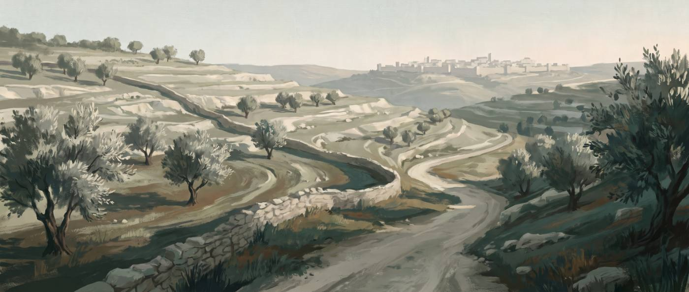

성경 배경 연구
1차 자료로 확인하는 성경 배경
성경 본문의 역사·지리·문헌 배경을 1차 자료로 확인해 정리한 연구 자료 모음입니다.
2 편
- 누가복음 2장 · 마태복음 2장 베들레헴 시대의 통치자들 예수님이 태어나셨을 때 로마 황제부터 수리아 총독·헤롯 대왕·대제사장까지 누가 어디를 다스렸는지, 그리고 헤롯이 죽은 뒤 나라가 어떻게 셋으로 나뉘었는지 초등학생도 읽을 수 있게 정리한 표.
- 누가복음 2:4-7 나사렛에서 베들레헴까지, 며칠 길이었나 요셉과 마리아가 호적하러 간 길의 실제 거리를 경유지 좌표로 계산하고, 걸어서 갔다는 견해와 나귀를 탔다는 견해를 문헌으로 나누어 이동 일수를 각각 산출했습니다. 나귀는 성경 본문에 없습니다.
찾는 자료가 없습니다. 다른 낱말로 검색해 보세요.